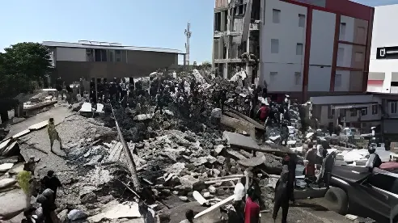

Le 10 août 2026, un séisme de magnitude 7,4 a frappé l'ouest de la Colombie, trois jours seulement après l'investiture du président Abelardo de la Espriella. Le séisme le plus meurtrier que le pays ait connu depuis des décennies a fait plusieurs centaines de morts et des milliers de blessés, tout en ouvrant une controverse sur la gestion de l'aide internationale et des secours par le nouveau gouvernement.
Le séisme s'est produit lundi 10 août 2026 à 07h34 heure locale, avec un épicentre localisé près de San José del Palmar, dans le département du Chocó, sur le littoral Pacifique colombien. Selon les services géologiques des États-Unis (USGS) et le Service géologique colombien (SGC), la secousse a atteint une magnitude de 7,4, à une profondeur d'environ 100 à 110 kilomètres. Aucune alerte au tsunami n'a été émise. Plusieurs médias ont fait état de secousses ressenties pendant près de quatre minutes, un fait jugé exceptionnel par les spécialistes de la sismologie.
Malgré cette profondeur importante, les vibrations ont été très largement ressenties à travers le pays : à Bogotá, à près de 500 kilomètres de l'épicentre, ainsi qu'à Cali, Pereira, Manizales et Quibdó. Le séisme a également été perçu jusqu'à Quito, capitale de l'Équateur voisin, ainsi qu'au Panama et au Venezuela.
Le bilan, très provisoire dans les premières heures, n'a cessé de s'aggraver à mesure que les secours atteignaient les zones les plus reculées du Chocó, une région pauvre et en partie accessible uniquement par bateau, par la jungle ou par avion. D'abord estimé à 111 morts le jour même, le bilan est passé à 132 morts le 11 août, puis à environ 240 morts le lendemain, avant de franchir la barre des 265 morts le 13 août. Au 20 août, le Centre national colombien de gestion des catastrophes (UNGRD) faisait état d'au moins 319 morts, environ 260 personnes toujours portées disparues et plus de 4 500 blessés.
La ville de Cali, troisième ville du pays, ainsi que les départements du Valle del Cauca, du Risaralda et du Chocó ont payé le plus lourd tribut. Plus de 300 bâtiments se sont effondrés, dont une partie de la cathédrale-basilique Notre-Dame-du-Rosaire, symbole de la ville de Manizales.
Le président Abelardo de la Espriella, entré en fonction seulement trois jours plus tôt, a décrété l'état d'urgence, d'abord dans les zones les plus touchées, puis étendu à quinze départements afin d'accélérer le déblocage de fonds pour les secours et la reconstruction. Le gouvernement a également annoncé une aide au loyer pour les familles déplacées. Le coût des dégâts, encore provisoire, a été évalué par les autorités à environ 8 milliards d'euros à la mi-août, avant d'être révisé à la hausse autour de 11 milliards d'euros une semaine plus tard, selon le bureau national de planification colombien.
Dans les heures qui ont suivi la catastrophe, des propositions d'aide sont arrivées du monde entier, du Chili au Qatar en passant par le Mexique, la Chine, l'Union européenne et les Nations unies. Mais le gouvernement colombien a choisi de ne solliciter formellement que le soutien d'équipes de recherche et de sauvetage envoyées par les États-Unis, l'Équateur, le Salvador et Israël — des pays dirigés par des gouvernements de droite ou d'extrême droite, proches politiquement du nouveau président. Ce choix, justifié par la nécessité de recourir à des équipes « reconnues par le système international », a suscité des critiques, notamment de la part de l'ONU et de plusieurs pays qui se sont dits prêts à aider sans recevoir de demande formelle.
Séisme de magnitude 7,4 à 07h34 ; premier bilan de 111 morts ; état d'urgence décrété.
Bilan porté à 132 morts et 570 blessés ; couvre-feux instaurés à Cali et Pereira.
Le bilan dépasse les 265 morts ; la recherche de survivants entre dans une phase décisive.
Bilan de 294 morts ; polémique autour du ministre du Logement, critiqué pour des vacances à la plage.
Bilan porté à 319 morts et 260 disparus ; état d'urgence étendu à quinze départements.
La gestion de la catastrophe par l'exécutif a rapidement suscité la controverse. Le ministre du Logement, Jaime Andrés Beltrán, a été très critiqué après avoir été aperçu en vacances avec sa famille sur une plage de Santa Marta, alors que des milliers de sinistrés dormaient sous des tentes. L'opposition de gauche a annoncé le dépôt d'une motion de censure à son encontre. Le président lui-même a été critiqué après avoir distribué, lors d'une visite à Buenaventura, des ballons de football floqués du slogan de sa campagne présidentielle à des enfants sinistrés, un geste perçu par une partie de l'opinion, y compris à droite, comme déplacé.
« Le Chocó ne sera plus jamais la terre de l'oubli. »
— Abelardo de la Espriella, lors d'une visite dans le Chocó, août 2026Survenu trois jours seulement après une investiture déjà hors norme à Cali, ce séisme place le nouveau pouvoir colombien face à sa première épreuve majeure. Entre l'ampleur du bilan humain, le choix contesté de limiter l'aide internationale à des partenaires idéologiquement proches et les impairs de communication de plusieurs membres du gouvernement, la réponse à la catastrophe est devenue, en quelques jours, un premier test de crédibilité pour l'exécutif d'Abelardo de la Espriella — tout en ravivant, dans le Chocó et l'Eje Cafetero, la question plus ancienne de l'abandon des régions les plus pauvres du pays face aux risques naturels.
El 10 de agosto de 2026, un terremoto de magnitud 7,4 sacudió el occidente de Colombia, apenas tres días después de la posesión del presidente Abelardo de la Espriella. El sismo más mortífero que ha vivido el país en décadas dejó varios cientos de muertos y miles de heridos, al tiempo que abrió una controversia sobre la gestión de la ayuda internacional y del socorro por parte del nuevo gobierno.
El terremoto se produjo el lunes 10 de agosto de 2026 a las 7:34 a.m., hora local, con epicentro cerca de San José del Palmar, en el departamento del Chocó, sobre el litoral Pacífico colombiano. Según el Servicio Geológico de Estados Unidos (USGS) y el Servicio Geológico Colombiano (SGC), el sismo alcanzó una magnitud de 7,4, a una profundidad de entre 100 y 110 kilómetros. No se emitió alerta de tsunami. Varios medios reportaron que las sacudidas se sintieron durante casi cuatro minutos, un hecho considerado excepcional por los sismólogos.
Pese a esa profundidad considerable, las vibraciones se sintieron ampliamente en todo el país: en Bogotá, a casi 500 kilómetros del epicentro, así como en Cali, Pereira, Manizales y Quibdó. El sismo también se percibió hasta Quito, capital del vecino Ecuador, así como en Panamá y Venezuela.
El balance, muy provisional en las primeras horas, no dejó de agravarse a medida que los socorristas alcanzaban las zonas más apartadas del Chocó, una región pobre y en parte accesible solo por vía fluvial, selva o avión. Estimado inicialmente en 111 muertos el mismo día, el balance subió a 132 muertos el 11 de agosto, luego a unos 240 muertos al día siguiente, hasta superar los 265 muertos el 13 de agosto. Al 20 de agosto, el Centro nacional de gestión del riesgo de desastres (UNGRD) reportaba al menos 319 muertos, unas 260 personas todavía desaparecidas y más de 4.500 heridos.
La ciudad de Cali, tercera del país, así como los departamentos del Valle del Cauca, Risaralda y Chocó, pagaron el precio más alto. Más de 300 edificaciones se derrumbaron, entre ellas parte de la catedral basílica Nuestra Señora del Rosario, símbolo de la ciudad de Manizales.
El presidente Abelardo de la Espriella, en el cargo apenas desde hacía tres días, decretó la emergencia, primero en las zonas más afectadas y luego extendida a quince departamentos, para agilizar los fondos destinados al socorro y la reconstrucción. El gobierno también anunció una ayuda para el arriendo destinada a las familias desplazadas. El costo de los daños, todavía provisional, fue estimado por las autoridades en unos 8.000 millones de euros a mediados de agosto, cifra revisada al alza hasta cerca de 11.000 millones de euros una semana después, según la oficina nacional de planeación colombiana.
En las horas siguientes a la catástrofe llegaron ofrecimientos de ayuda desde todo el mundo, desde Chile hasta Catar, pasando por México, China, la Unión Europea y las Naciones Unidas. Sin embargo, el gobierno colombiano optó por solicitar formalmente únicamente el apoyo de equipos de búsqueda y rescate enviados por Estados Unidos, Ecuador, El Salvador e Israel — países gobernados por administraciones de derecha o extrema derecha, políticamente afines al nuevo presidente. Esta decisión, justificada por la necesidad de recurrir a equipos «reconocidos por el sistema internacional», generó críticas, en particular de la ONU y de varios países que se declararon dispuestos a ayudar sin haber recibido una solicitud formal.
Terremoto de magnitud 7,4 a las 7:34 a.m.; primer balance de 111 muertos; se decreta la emergencia.
Balance de 132 muertos y 570 heridos; toques de queda en Cali y Pereira.
El balance supera los 265 muertos; la búsqueda de sobrevivientes entra en una fase decisiva.
Balance de 294 muertos; polémica por el ministro de Vivienda, criticado por vacacionar en la playa.
Balance de 319 muertos y 260 desaparecidos; la emergencia se extiende a quince departamentos.
La gestión de la catástrofe por parte del Ejecutivo generó rápidamente controversia. El ministro de Vivienda, Jaime Andrés Beltrán, fue muy criticado tras ser visto de vacaciones con su familia en una playa de Santa Marta, mientras miles de damnificados dormían en carpas. La oposición de izquierda anunció una moción de censura en su contra. El propio presidente fue criticado después de repartir, durante una visita a Buenaventura, balones de fútbol con el eslogan de su campaña presidencial entre niños afectados por el sismo, un gesto percibido por buena parte de la opinión pública, incluso de derecha, como fuera de lugar.
« El Chocó nunca más será la tierra del olvido. »
— Abelardo de la Espriella, durante una visita al Chocó, agosto de 2026Ocurrido apenas tres días después de una posesión ya de por sí fuera de lo común en Cali, este terremoto somete al nuevo gobierno colombiano a su primera gran prueba. Entre la magnitud del balance humano, la controvertida decisión de limitar la ayuda internacional a socios ideológicamente afines y los tropiezos de comunicación de varios funcionarios, la respuesta a la catástrofe se convirtió, en pocos días, en una primera prueba de credibilidad para el gobierno de Abelardo de la Espriella — reavivando además, en el Chocó y el Eje Cafetero, el debate más antiguo sobre el abandono de las regiones más pobres del país frente a los riesgos naturales.